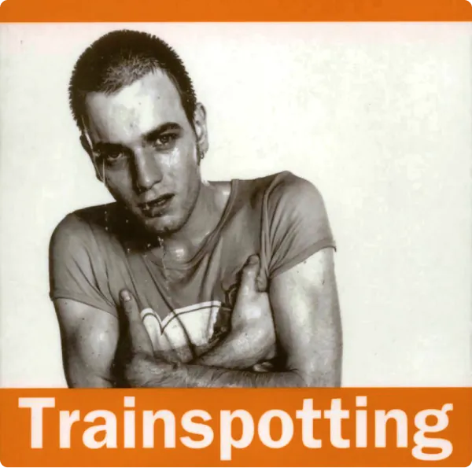

Trainspotting, un trip cimématographique
Ce chef d'œuvre de Danny Boyle nous fait entrer dans le quotidien d'un groupe de jeunes marginaux écossais. “On a pas besoin de raisons quand on a l'héroïne”. Que pourrait-il mal se passer ?
LIRE PLUS


Le blog 100% indépendant
Racines, le véritable réseau culturel. Films, musiques, livres... On s'intéresse à tout ce qui est mémorable et surprenant ! Curieux·euses, cet endroit est fait pour vous.
En savoir plus sur Racines.
Ce chef d'œuvre de Danny Boyle nous fait entrer dans le quotidien d'un groupe de jeunes marginaux écossais. “On a pas besoin de raisons quand on a l'héroïne”. Que pourrait-il mal se passer ?
LIRE PLUSEn une musique, imaginez du rock, de l'électro et du ska. Le tout animé dans l'univers de la BD Zombillénium. Un mélange hors norme qui fonctionne parfaitement !
LIRE PLUSDans la catégorie des bâtiments insolites voici la Maison dansante. Son côté atypique a d'abord été rejeté mais comme tout art singulier et innovant, elle est désormais considérée comme un des symboles principaux de Prague.
LIRE PLUSDes montres dans un parc d'attractions ? Vampires, loups garous, zombies et autres démons s'accordent pour dire que leur vie est ennuyante à mourir. Du moins jusqu'à l'arrivée d'un mystérieux humain…
LIRE PLUSAmateurs de philosophie sortez vos carnets ! Que signifie le fait de se retrouver à l'écart de notre machine sociale et de son fonctionnement ? Quel avenir est réservé aux chômeurs, SDF, toxicomanes ?
LIRE PLUS
La génération Z est trop représentée comme des jeunes superficiels. Nous sommes avant tout une génération ouverte, sans tabous et en quête de liberté. Génération Z, c'est celle qui se délivre de ses propres maux par les mots.
LIRE PLUS